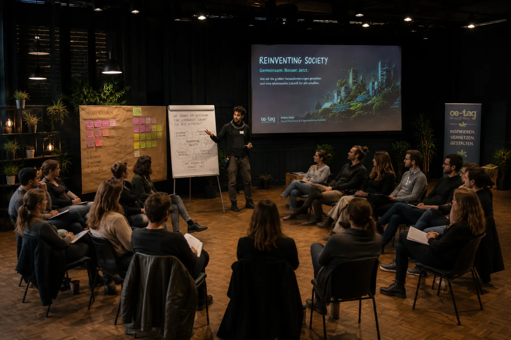

Integrale Theorie · AQAL · OrganisationsentwicklungIntegral Theory · AQAL · Organisational Development
Nicht entweder. Mehr Perspektiven gleichzeitig.Not either-or. More perspectives at once.
Integrale Theorie bietet eine Landkarte für komplexe Wirklichkeiten. In Organisationen hilft sie, persönliche Erfahrung, sichtbares Verhalten, gemeinsame Kultur und formale Systeme zusammen zu betrachten.Integral Theory offers a map for complex realities. In organisations, it helps us consider personal experience, visible behaviour, shared culture and formal systems together.
Das von Ken Wilber entwickelte AQAL-Modell umfasst Quadranten, Ebenen, Linien, Zustände und Typen. Wilber selbst betont: Eine Landkarte bleibt eine Landkarte und ist nicht das Gelände.The AQAL model developed by Ken Wilber includes quadrants, levels, lines, states and types. Wilber himself stresses that a map remains a map and is not the territory.
InnenInteriorAußenExterior
IndividuellIndividualKollektivCollective
AQAL
4gleichwertige Perspektivenequally relevant perspectives
5AQAL-LinsenAQAL lenses
1Landkarte, viele Methodenmap, many methods
10+Jahre OE-Erfahrungyears of OD experience
Eine Meta-LandkarteA meta-map
Komplexität nicht vereinfachen. Besser sortieren.Do not flatten complexity. Organise it better.
Integrale Theorie ist keine einzelne Methode für Workshops. Sie ist ein Meta-Rahmen, der unterschiedliche Wissensgebiete und Zugänge in Beziehung setzt. Für Organisationsentwicklung bedeutet das: Psychologie, Verhalten, Kultur und Systemdesign erzählen jeweils einen wichtigen, aber nur teilweisen Teil der Geschichte.Integral Theory is not one workshop method. It is a meta-framework that relates different fields of knowledge and ways of knowing. For organisational development, this means psychology, behaviour, culture and system design each tell an important but partial part of the story.
01
Die vier QuadrantenThe four quadrants
Vier Fenster auf dieselbe Organisation.Four windows onto the same organisation.
Die Achsen Innen und Außen sowie Individuell und Kollektiv erzeugen vier Perspektiven. Integral Life beschreibt sie als nicht aufeinander reduzierbare Sichtweisen.The axes of interior and exterior, individual and collective, create four perspectives. Integral Life describes them as perspectives that cannot be reduced to one another.
Individuell · InnenIndividual · Interior
Erleben & IntentionExperience & intention
Motive, Identität, Sinn, Emotionen, Überzeugungen und persönliche Deutungen.Motives, identity, meaning, emotions, beliefs and personal interpretations.
OE-Frage: Was bewegt die Menschen innerlich?OD question: What moves people internally?Individuell · AußenIndividual · Exterior
Verhalten & KompetenzBehaviour & capability
Beobachtbares Handeln, Fähigkeiten, Routinen, Kommunikation und körperliche Bedingungen.Observable action, skills, routines, communication and physical conditions.
OE-Frage: Was tun Menschen tatsächlich?OD question: What do people actually do?Kollektiv · InnenCollective · Interior
Kultur & BeziehungCulture & relationship
Geteilte Werte, Sprache, Narrative, Vertrauen, Zugehörigkeit und informelle Normen.Shared values, language, narratives, trust, belonging and informal norms.
OE-Frage: Welche Wirklichkeit erzeugen wir gemeinsam?OD question: What reality do we create together?Kollektiv · AußenCollective · Exterior
Struktur & SystemeStructure & systems
Rollen, Prozesse, Technologie, Governance, Anreize, Ressourcen und Abhängigkeiten.Roles, processes, technology, governance, incentives, resources and dependencies.
OE-Frage: Was stabilisiert das aktuelle Muster?OD question: What stabilises the current pattern?02
AQAL
Mehr als Quadranten: fünf Prüfbewegungen.More than quadrants: five movements of inquiry.
QuadrantenQuadrants
Welche Innen- und Außenseiten von Individuum und Kollektiv sind relevant?Which interior and exterior dimensions of individuals and collectives matter?
EbenenLevels
Welche Formen von Komplexität und Entwicklung kann das System derzeit tragen?What forms of complexity and development can the system currently hold?
LinienLines
Welche Fähigkeiten sind unterschiedlich weit entwickelt, etwa fachlich, sozial oder strategisch?Which capacities have developed unevenly, for example technical, social or strategic?
ZuständeStates
Wie beeinflussen Stress, Präsenz, Energie oder Aufmerksamkeit das aktuelle Handeln?How do stress, presence, energy or attention shape action right now?
TypenTypes
Welche wiederkehrenden Unterschiede oder Polaritäten helfen, Vielfalt zu verstehen?Which recurring differences or polarities help us understand diversity?
Vertiefung: AQAL-Übersicht des Ken Wilber Fund und Ken Wilbers Einführung bei Integral Life.Explore further: AQAL overview from the Ken Wilber Fund and Ken Wilber’s introduction at Integral Life.

Organisationen verändern sich nicht nur durch neue Strukturen. Und nicht nur durch ein neues Mindset.Organisations do not change through new structures alone. Nor through a new mindset alone.
Integrale OrganisationsentwicklungIntegral organisational development
Veränderung scheitert oft an einer fehlenden Perspektive.Change often fails because one perspective is missing.
Ein Kulturprogramm bleibt wirkungslos, wenn Prozesse und Anreize das Gegenteil belohnen. Ein neues Organigramm hilft wenig, wenn Menschen keinen Sinn sehen oder alte Beziehungsmuster bestehen bleiben. Die integrale Landkarte macht solche Lücken sichtbar.A culture programme remains ineffective when processes and incentives reward the opposite. A new organisation chart helps little when people see no meaning or old relationship patterns persist. The integral map makes these gaps visible.
Sie ersetzt keine Diagnose, Forschung oder Fachmethode. Sie hilft, passende Zugänge zu kombinieren und Interventionen aufeinander abzustimmen.It does not replace diagnosis, research or specialist methods. It helps combine appropriate approaches and align interventions.
Coaching & ReflexionCoaching & reflection
Sinn, Motivation, Identität und innere Führung.Meaning, motivation, identity and inner leadership.
Training & PraxisTraining & practice
Fähigkeiten, Gewohnheiten, Experimente und Feedback.Skills, habits, experiments and feedback.
Dialog & KulturarbeitDialogue & culture work
Vertrauen, Konflikte, Narrative und gemeinsame Prinzipien.Trust, conflict, narratives and shared principles.
Design & GovernanceDesign & governance
Rollen, Entscheidungswege, Prozesse und Ressourcen.Roles, decision paths, processes and resources.
Spiral Dynamics®
Entwicklung verstehen. Menschen nicht einfärben.Understand development. Do not colour-code people.
Spiral Dynamics baut auf der emergent-cyclical theory von Clare W. Graves auf und wurde durch Don Beck und Christopher Cowan für praktische Anwendungen weiterentwickelt. Im Zentrum stehen sich wandelnde Lebensbedingungen und die Denk- und Wertesysteme, mit denen Menschen und Kollektive darauf antworten.Spiral Dynamics builds on the emergent cyclical theory of Clare W. Graves and was developed for practical application by Don Beck and Christopher Cowan. Its focus is the interaction between changing life conditions and the thinking and value systems through which individuals and collectives respond.
Spiral Dynamics ist ein eigenständiges Modell. Ken Wilber bezog Entwicklungsmodelle wie dieses später in integrale Landkarten ein. In meiner Arbeit dienen sie als Hypothesen über Kontext und verfügbare Logiken, nicht als Persönlichkeitstest, Rangliste oder Etikett.Spiral Dynamics is a model in its own right. Ken Wilber later included developmental models like this in integral maps. In my work, they serve as hypotheses about context and available logics, not as personality tests, rankings or labels.
01Kontext vor FarbeContext before colour
02Systeme statt PersönlichkeitstypenSystems, not personality types
03Integration statt ÜberlegenheitIntegration, not superiority
03
Verbindungen zur OE-PraxisConnections to OD practice
Verwandte Landkarten. Unterschiedliche Schwerpunkte.Related maps. Different emphases.
Diese Ansätze sind nicht identisch mit Integraler Theorie. Sie lassen sich aber produktiv danebenlegen, wenn Herkunft und Unterschiede sichtbar bleiben.These approaches are not identical to Integral Theory. They can be placed alongside it productively when origins and differences remain visible.
Ken Wilber
Meta-Rahmen für Quadranten, Ebenen, Linien, Zustände und Typen.Meta-framework for quadrants, levels, lines, states and types.
Einführung lesenRead the introduction ↗Graves & Spiral Dynamics
Entwicklungsdynamik zwischen Lebensbedingungen und Bewältigungssystemen.Developmental dynamics between life conditions and coping systems.
Einführungs-PDFIntroductory PDF ↗Frederic Laloux
Reinventing Organizations über Selbstführung, Ganzheit und evolutionären Sinn.Reinventing Organizations on self-management, wholeness and evolutionary purpose.
Projektseite öffnenOpen project site ↗Theory U
Awareness-based Systems Change mit Aufmerksamkeit, tiefem Zuhören und Prototyping.Awareness-based systems change through attention, deep listening and prototyping.
Theory-U-EinführungTheory U introduction ↗Peter Senge
Systems Thinking und die fünf Disziplinen der lernenden Organisation.Systems thinking and the five disciplines of the learning organisation.
Center for Systems AwarenessCenter for Systems Awareness ↗Reinventing Organizations Journey
Praxisimpulse und Lernmaterialien von Frederic Laloux für konkrete Veränderungswege.Practice insights and learning resources from Frederic Laloux for concrete change journeys.
Journey ansehenExplore the journey ↗

Meine RolleMy role
Ich bringe Landkarten ein. Die Organisation bleibt das Gelände.I bring maps. The organisation remains the territory.
Als Facilitator und Organisationsentwickler nutze ich integrale Perspektiven, um blinde Flecken zu erkennen, Hypothesen zu prüfen und passende Interventionen zu verbinden. Dabei übersetze ich Theorie in verständliche Fragen, Bilder und Prozessarchitekturen.As a facilitator and organisational development practitioner, I use integral perspectives to identify blind spots, test hypotheses and connect appropriate interventions. I translate theory into understandable questions, images and process architectures.
Ich diagnostiziere keine Menschen nach Farben oder vermeintlichen Bewusstseinsstufen. Entwicklung zeigt sich kontextabhängig, ungleichzeitig und in unterschiedlichen Linien. Entscheidend ist, was einer konkreten Organisation hilft, verantwortungsvoller mit ihrer Komplexität umzugehen. Mehr zu meinem Hintergrund finden Sie unter About.I do not diagnose people by colours or presumed levels of consciousness. Development is contextual, uneven and expressed across different lines. What matters is what helps a specific organisation engage with its complexity more responsibly. Read more under About.
04
Originalquellen & VertiefungPrimary sources & further reading
Von der Einführung bis zur Anwendung.From introduction to application.
Die Auswahl verbindet Selbstbeschreibungen der Ansätze mit frei zugänglichen Fachtexten. Unterschiedliche Schulen verwenden ähnliche Begriffe teilweise verschieden.This selection combines the approaches’ own descriptions with openly accessible specialist texts. Different schools sometimes use similar terms differently.
01
Ken Wilber · Integral Life
↗
02Welcome to the Integral Approach
Ken Wilber Fund
↗
03Integral Theory and AQAL Overview
Integral Life
↗
04Quadrants: Experience, Action, Culture and Systems
Peer-reviewed primer
↗
05A Primer on Integral Theory
Spiral Dynamics®
↗
06What Is Spiral Dynamics?
Clare W. Graves Archive
↗
07Emergent Cyclical Levels of Existence
Chris Cowan & Natasha Todorovic
↗
08A Brief Introduction to Spiral Dynamics
Frederic Laloux
↗
09Reinventing Organizations
Frederic Laloux
↗
10Insights for the Journey
u-school for Transformation
↗
11Theory U Introduction
Center for Systems Awareness
↗
12Peter Senge and Organisational Learning
Journal of Integral Theory and Practice
↗
Integral Sustainable Development
Häufige FragenFrequently asked questions
Integrale Theorie ohne Nebel.Integral Theory without the fog.
Was ist Integrale Theorie?What is Integral Theory?+
Integrale Theorie ist ein von Ken Wilber entwickelter Meta-Rahmen. Das AQAL-Modell verbindet Quadranten, Ebenen, Entwicklungslinien, Zustände und Typen, um Phänomene aus mehreren Perspektiven zu betrachten.Integral Theory is a meta-framework developed by Ken Wilber. The AQAL model connects quadrants, levels, developmental lines, states and types to examine phenomena from multiple perspectives.
Was bedeuten die vier Quadranten für Organisationen?What do the four quadrants mean for organisations?+
Sie lenken Aufmerksamkeit auf persönliche Erfahrung, beobachtbares Verhalten, gemeinsame Kultur und formale Systeme. Veränderung wird robuster, wenn diese Perspektiven zusammen gedacht werden.They direct attention to personal experience, observable behaviour, shared culture and formal systems. Change becomes more robust when these perspectives are considered together.
Ist Spiral Dynamics Teil der Integralen Theorie?Is Spiral Dynamics part of Integral Theory?+
Spiral Dynamics ist ein eigenständiges Entwicklungsmodell aus der Graves-Tradition. Ken Wilber integrierte es später als eine mögliche Stufenlandkarte in Teile seines integralen Rahmens.Spiral Dynamics is a developmental model in its own right, rooted in the Graves tradition. Ken Wilber later incorporated it as one possible stage map within parts of his integral framework.
Werden Menschen Farben oder Stufen zugeordnet?Are people assigned colours or stages?+
Nicht in meiner Arbeit. Entwicklungsmodelle dienen als vorsichtige Hypothesen über Kontext und verfügbare Denkweisen. Menschen zeigen je nach Lebensbereich, Situation und Entwicklungslinie unterschiedliche Muster.Not in my work. Developmental models serve as cautious hypotheses about context and available ways of thinking. People show different patterns depending on life domain, situation and developmental line.
Ist Integrale Theorie wissenschaftlich belegt?Is Integral Theory scientifically established?+
Integrale Theorie ist ein transdisziplinärer Meta-Rahmen, keine einzelne empirische Theorie mit einem einheitlichen Test. Einzelne Entwicklungsmodelle und Anwendungen unterscheiden sich deutlich in ihrer Forschungsbasis. Deshalb nutze ich die Landkarte heuristisch und verbinde sie mit überprüfbaren Daten, Beobachtung und Fachmethoden.Integral Theory is a transdisciplinary meta-framework, not a single empirical theory with one unified test. Individual developmental models and applications differ significantly in their research base. I therefore use the map heuristically and combine it with verifiable data, observation and specialist methods.
Für welche OE-Themen eignet sich der Ansatz?Which OD topics suit this approach?+
Besonders für komplexe Strategie-, Kultur-, Führungs- und Transformationsfragen, bei denen individuelle, zwischenmenschliche und strukturelle Faktoren zusammenwirken.It is especially useful for complex strategy, culture, leadership and transformation questions where individual, interpersonal and structural factors interact.
Welche Perspektive fehlt bisher?Which perspective has been missing?
Erstgespräch anfragenRequest an introductory call
Betrachten wir Ihre Herausforderung als zusammenhängendes Ganzes.Let’s view your challenge as a connected whole.
Im Erstgespräch klären wir, ob eine integrale Landkarte für Ihr Strategie-, Kultur- oder Transformationsthema hilfreich ist.In an introductory call, we clarify whether an integral map is useful for your strategy, culture or transformation challenge.